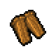

Wood wedge (duplicate)
| This page is a candidate for deletion.
Reason: " duplicate" |
| This article is a stub. You can help Graveyard Keeper Wiki by expanding it. |
| Wood wedge | |
|---|---|
 | |
General Information
| |
Type :
|
Wood |
Base Cost :
|
|
Source(s)
| |
| Chopping spot or Tress | |
Technical Information
| |
Internal name:
|
spike_1 |

Wood wedge (duplicate) is often used to get rid of Blockages, along with other Items.